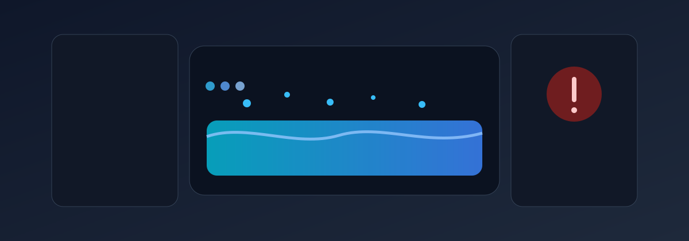

DR 30 mA nos Circuitos de Manutencao do Elevador
Pergunta tecnica: Qual é a função do DR (dispositivo diferencial residual) nos circuitos de manutenção do elevador?

1. Identificacao Tecnica
Sintoma Observado (Linguagem Leiga):
Qual é a função do DR (dispositivo diferencial residual) nos circuitos de manutenção do elevador?
Definicao Tecnica:
O DR 30 mA (dispara em 30 miliamperes de corrente desbalanceada) é um protetor contra eletrochoque que deve estar em TODOS os circuitos de tomada e iluminação usados durante manutenção do elevador. A função? Se um técnico encosta em fio desencapado, ferrão de ferramenta quebrada, ou qualquer ponto com energia enquanto está em contato com terra úmida (piso molhado do fosso), o DR detecta a corrente de fuga através do corpo da pessoa e DESLIGA instantaneamente em 30 milissegundos — tempo suficiente para evitar fibrilação ventricular (parada cardíaca). Sem o DR, essa corrente de fuga pode passar por 100+ miliamperes, matando a pessoa. O fosso do elevador é ambiente ÚMIDO — risco de choque é máximo. A norma é clara: toda tomada de manutenção deve ter DR próprio, independente. Sua ausência é não conformidade crítica.
Localizacao Tipica:
Cabina, portas, casa de maquinas, quadro de comando e componentes de seguranca vinculados ao tema analisado.
2. Contexto e Cenario
O que e observado em campo
O DR 30 mA (dispara em 30 miliamperes de corrente desbalanceada) é um protetor contra eletrochoque que deve estar em TODOS os circuitos de tomada e iluminação usados durante manutenção do elevador. A função? Se um técnico encosta em fio desencapado, ferrão de ferramenta quebrada, ou qualquer ponto com energia enquanto está em contato com terra úmida (piso molhado do fosso), o DR detecta a corrente de fuga através do corpo da pessoa e DESLIGA instantaneamente em 30 milissegundos — tempo suficiente para evitar fibrilação ventricular (parada cardíaca). Sem o DR, essa corrente de fuga pode passar por 100+ miliamperes, matando a pessoa. O fosso do elevador é ambiente ÚMIDO — risco de choque é máximo. A norma é clara: toda tomada de manutenção deve ter DR próprio, independente. Sua ausência é não conformidade crítica.
- Origem recorrente: Falha de instalacao, ajuste ou manutencao fora do padrao tecnico.
- Modo de falha: Perda de desempenho, risco ao usuario e nao conformidade normativa.
- Agravantes: Ausencia de monitoramento, registros incompletos e correcao tardia.
3. Protocolo de Inspecao
- Confirmar o achado com inspeção em campo e registro fotográfico.
- Conferir parâmetros de funcionamento e evidências de risco associado.
- Verificar conformidade com as normas aplicáveis listadas abaixo.
- Emitir plano corretivo com prazo compatível com a gravidade.
4. Normas Tecnicas Aplicaveis
- ABNT NBR 12892:2022, 13.1.2.3
- ABNT NBR 16858-1:2020, 5.10.1.2.3
5. Matriz de Decisao Corretiva
| Cenario | Acao recomendada | Prazo |
|---|---|---|
| Nao conformidade confirmada para elev-025 | Bloquear risco, executar correcao tecnica e validar funcionalmente | 0-24h |
| Risco moderado com operacao controlada | Programar ajuste, medir novamente e registrar evidencia de conformidade | Ate 7 dias |
| Condicao estabilizada apos correcao | Manter monitoramento e revisao periodica de manutencao preventiva | Ate 30 dias |
Responsabilidade: Condomínio
Gravidade: Alta
Precisa de analise tecnica para este tema?
A Proton Engenharia executa inspeção especializada em elevadores com foco em segurança, conformidade e responsabilidade tecnica.